Mapa oficial
Atrativos da Chapada
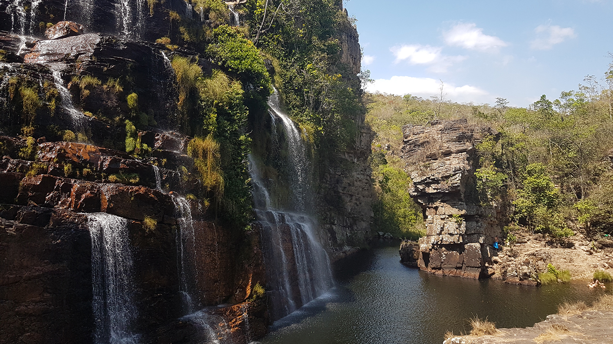
Cachoeiras Almécegas e Poço São Bento
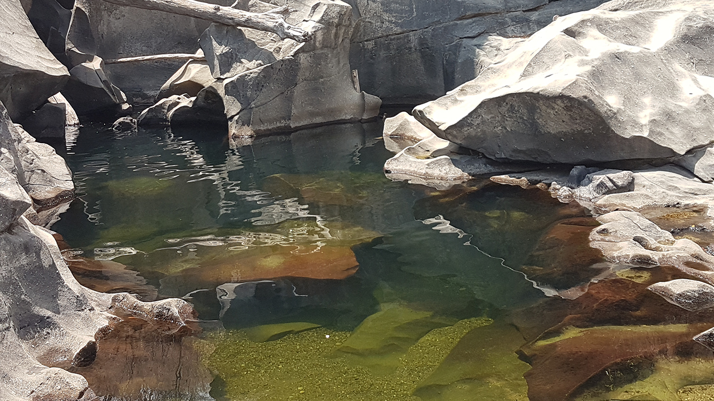
Vale da Lua
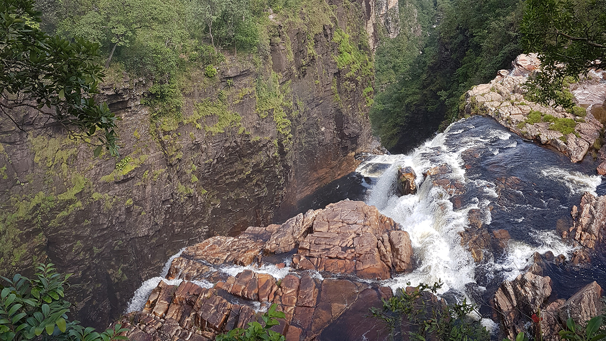
Cataratas dos Couros
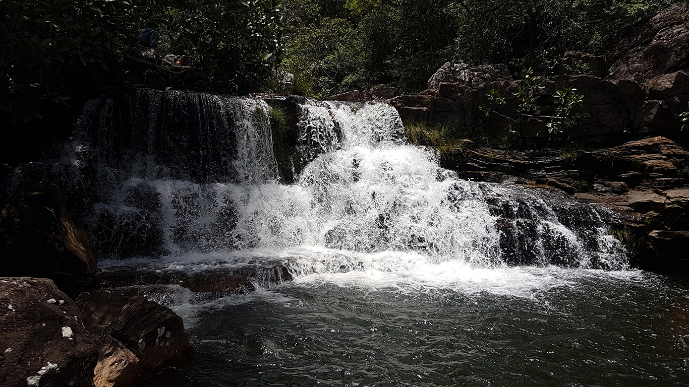
Cachoeira Cordovil e Poço Esmeralda
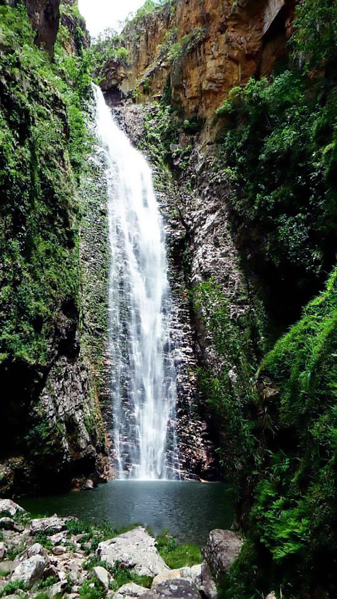
Cachoeira do Segredo

Cachoeira dos Cristais
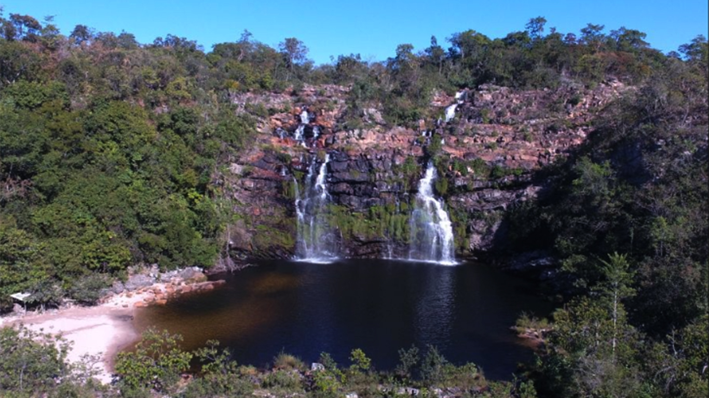
Cachoeira Poço Encantado

Cachoeira Santa Bárbara
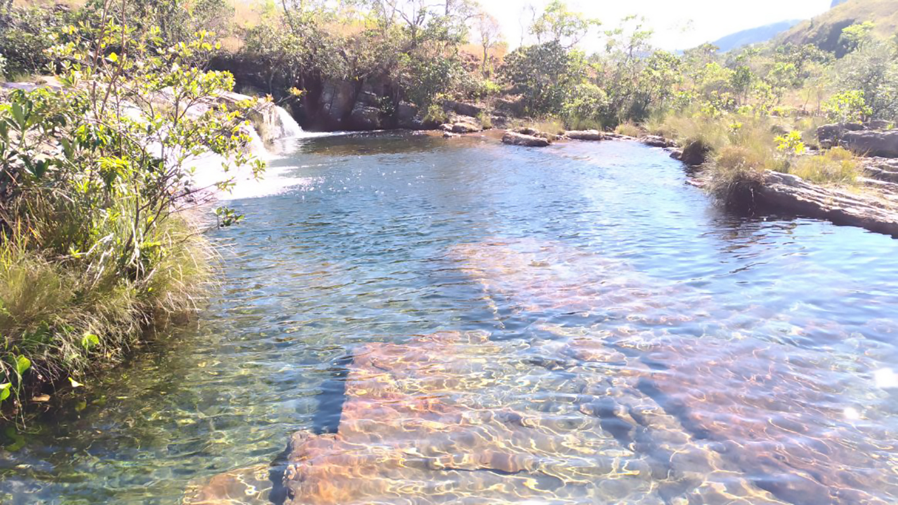
Complexo de Cachoeiras do Rio da Prata

Cachoeiras dos Macaquinhos
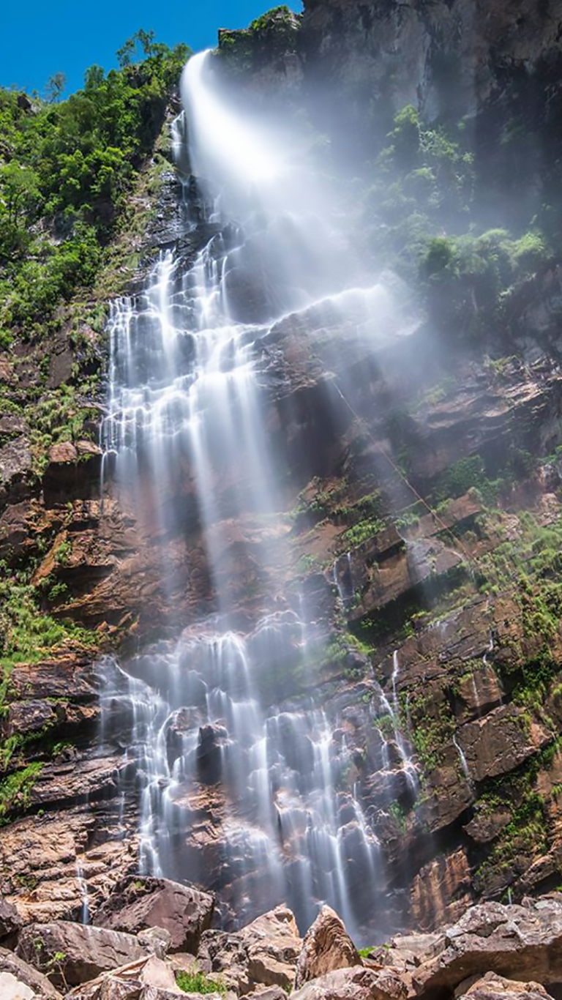
Cachoeira do Label
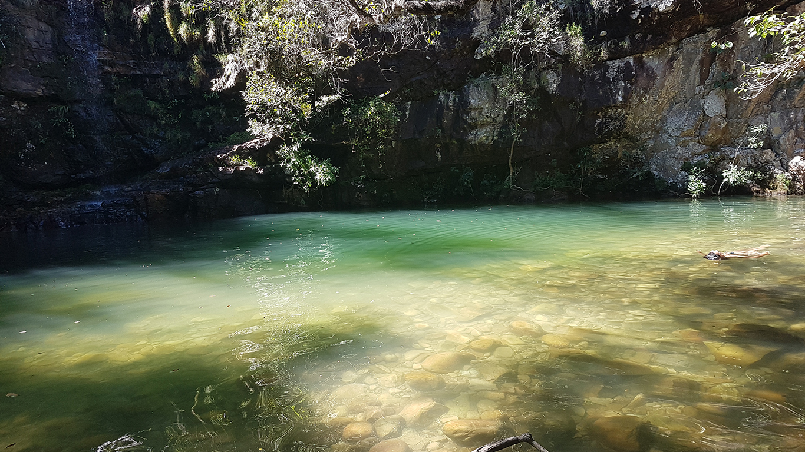
Cachoeira das Loquinhas
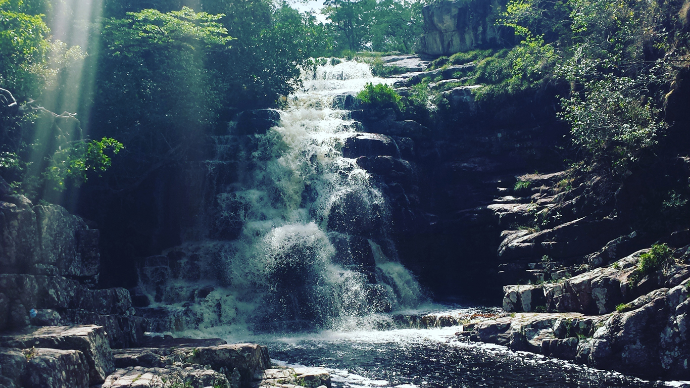
Cachoeira Anjos e Arcanjos
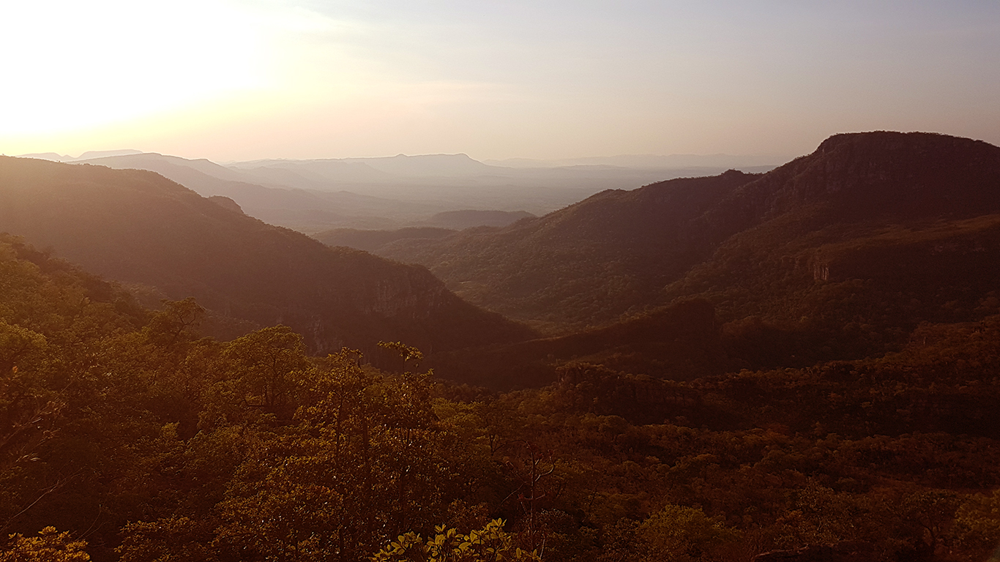
Mirante da Janela e Cachoeira do Abismo

Parque Nacional da Chapada dos Veadeiros - Saltos do Rio Preto

Parque Nacional da Chapada dos Veadeiros - Cânions e Cariocas

Cachoeira do Macaco
Toque ou clique nas áreas do mapa sobre os atrativos que estão catalogados para obter maiores informações.